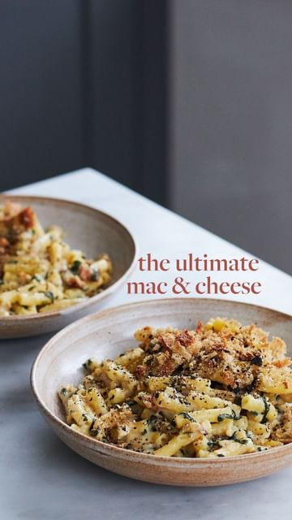

ingredients
recipe by @deliciouslyella (Deliciously Ella) - see original post

- 400g macaroni pasta
- 400ml almond milk
- 2 large handfuls spinach, roughly chopped
- 50g nutritional yeast, plus 1 tablespoon for the topping
- 50g tapioca flour
- 2 tablespoons of Dijon mustard
- juice of 1 lemon
- 2 slices of good-quality sourdough bread
- Pinch of salt
- Drizzle of olive oil
- 1 clove of garlic
- Lot of black pepper
method
1. Preheat the oven to 200C (390F), grill setting.
-
Cook the macaroni pasta according to the instructions on the pack, adding the chopped spinach in the last minute. Once cooked, drain and leave to one side until needed.
-
Make the white sauce by placing the tapioca flour, lemon juice, nutritional yeast, mustard, almond milk and a pinch of salt into a pan over a medium heat. Cook until the mixture begins to bubble, continuously whisking to ensure the mixture stays smooth and doesn’t form any lumps. You may want to add a dash more almond milk if the sauce ever becomes too thick.
-
Once the sauce comes together and is piping hot, stir the pasta through the sauce, grate in the garlic, season to taste and spoon into a baking dish.
-
Make the topping by placing the bread and 1 tablespoon of nutritional yeast into a food processor and blending until it reaches a bread crumb like consistency.
-
Scatter the breadcrumb mixture over the top of the macaroni and cook in the oven for 5-10 minutes until the top turns golden.